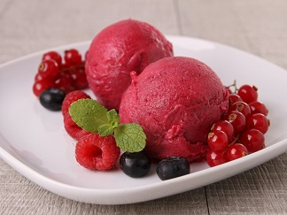

Le sorbet aux choix recette
Ingrédients :
- 80g de fruits(jus de fruit au choix)
- 1 blanc d'oeuf
- sucre
Préparation :
- Pelez, dénoyauter les fruits, les presser s'il s'agit de fruits à jus, sinon mixer finement la chair des fruits.
- Mélanger avec le sucre dans la proportion d'un verre de sucre pour 3 verres de pulpe de fruit (pour le citron couper le jus avec de l'eau moitié moitié). Bien mélanger et placer au congélateur pour la nuit (ou la journée).
- Le lendemain, sortir la pulpe du congélateur, la couper grossièrement en morceau et la placer dans le mixeur. Ajouter le blanc d'oeuf et mixer. Ce n'est pas facile au début mais au bout de quelques minutes, le mélange devient onctueux et crémeux, il ne reste plus qu'à servir.